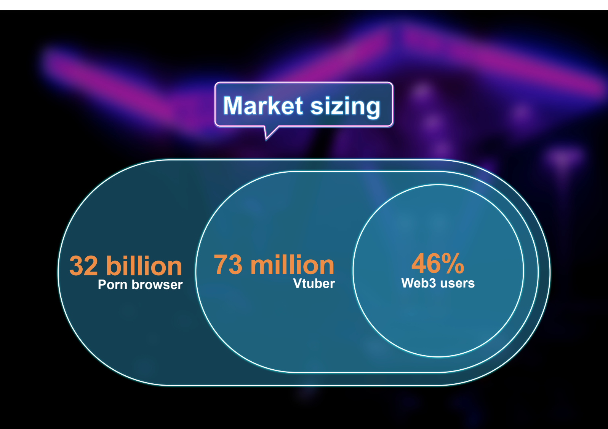

How might fans interact with their favorite Vtuber but not only by texting?
Most of the platform for Vtuber fans can only chat or interact with the streamers by texting. So it will be cool to create a platform for creators to invite their fans to stream together.
Also create a real creative freedom platform for Vtubers. Combine the unlimited specialties from Web3 industry and biggest adult industry company in Mandarin countries.
Roles
Researcher / Commuication / Prototype
I not only work on user research and flow drawing and have great communication skills with other roles, project planners, and back-end engineers.
After discussing the problems with the project planner, the flowchart drawing starts to discuss the API with the back-end engineers. Our team has excellent chemistry with each other, which guides us on the right track. I must draw and code the prototype by Adobe Xd, HTML, CSS, and JS to make up for the status of no front-end engineers in our team.
Research
“The sexual industry never die. Only depends on how me create the value.”
Find out the early adopters and unique value propositions with operations departments. We have 33 million potential users for our platform. Create the first NFT combine vtuber streaming in the industry.
First, We all know that Twitter and Youtube have the specifications for the creators. They blocked the creators for adult politics. And the pornographic stream website, Chaturbate, does not have a platform for Vtuber creators. Second, the search trend on Pornhub “Hentai” has grown to first place in 2022. Last but not least, as an NFT sector in a pornographic company, we have great resources in the adult industry.
Those benefits that I mention. We decide to build a non-limit streaming platform for vtuber creators and pornographic lovers.
How might porn lovers browse the adult vtuber stream show?
Sex is the physiological need and Self-actualization in Maslow’s Hierarchy Of Needs.
“Enter the stream,” “Find their favorite vtubers,” and ”Discover different streamers” are the three main ideas for our website. So we realize that the platform must work as efficiently as the porn website, such as Pornhub, but also have the interactions between creators and browsers, like Twitch and Chaturbate. So I draw the user flow to ensure that all the users can only use steps to rich their goals in our platform.
On the other hand, our streaming page. The streamers and viewers can intuitively invite and join the streaming.
Research the Blue Ocean strategy with the project planner team to compare the specialties with competitors. To make sure the MVP that we made is in the proper position.
“The sexual industry never die. Only depends on how me create the value.”

Difficulties
How might browsers customize their UI for browsers and also make it easy for browsers and streamers to interact with others?We plan to create a 3D space for the vtubers model to wake smoothly on the screen, so the guest can also move around the area. I have tried many versions, but they are still too ordinary and look almost identical to other browsers. When I saw the MMO RPG game’s UI, that inspired me to create the final version, a full-screen streaming UI for browsers, users can show/hide the function boxes and create their layout by moving those function boxes.
MVP
I drew the prototype using XD, HTML, CSS, and JS. Then build up the MVP with the back-end engineers to test for the functions. All the staff in our Taipei company, about 100 people, join the testing. Interact with the vtuber is the goal of the user journey:
- That 100 users use the cryptocurrency wallet address to enter the stream room to watch the show.
- Move every function box to the place that you feel comfortable.
- Chat on the chat bar.
- Donate to the streamers.
- Enter the stream while the streamer invites them.
First, We all know that Twitter and Youtube have the specifications for the creators. They blocked the creators for adult politics. And the pornographic stream website, Chaturbate, does not have a platform for Vtuber creators. Second, the search trend on Pornhub “Hentai” has grown to first place in 2022. Last but not least, as an NFT sector in a pornographic company, we have great resources in the adult industry.
Those benefits that I mention. We decide to build a non-limit streaming platform for vtuber creators and pornographic lovers.
Feedback
97% successfully reach the goal, and 93% of users have great experiences with this product. 5% for good experiences, and 2% think it was a lousy product. The bad experience users feedbacked the issue of the cryptocurrency wallet connecting. They needed help finding the place to sign in the wallet address to join the streamers' invitations. So I move the link button to where the users only need two steps to reach the goal.